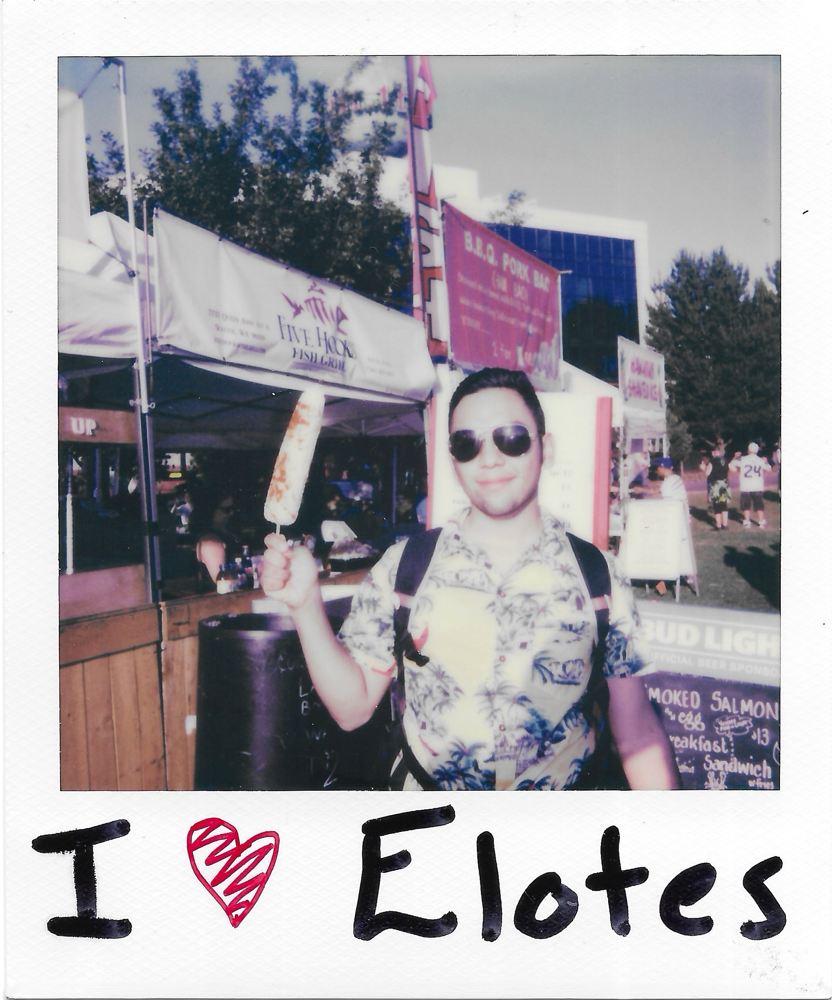

Designing with Purpose, Coding with Precision

Its Me! Hi!
Welcome, I am Carlos A. Carrillo-Sandoval. I study Informatics at the University of Washington and enjoy turning creative ideas into reality. I specialize in Software Development and User Experience Design. Aside from my career interest, I have a fascination for collecting records, nature, and snapping polaroids of special moments.
Come back soon for the full reveal!